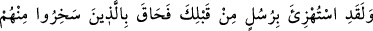
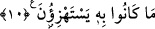
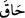
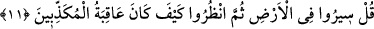

(r.a.)’ın suretinde gelirdi. Davud (a.s.)’a gelen melekler ise, birbirine hasım olan iki
adam şeklinde gelmişlerdi. Kezâ İbrahim (a.s.)’a gelen melekler de iki misafir şeklinde
görünmüşlerdi. Çünkü melekleri aslî hüviyetleri ile görmeye insanların gücü yetmez.
Melekleri ancak peygamberlerden bazıları, Allah’ın kendilerine verdiği kudsî bir
kuvvet sayesinde aslî sûretleri üzere görebilmişlerdir.
“Ve onları yine düşdükleri kuşkuya düşürürdük.” Yani, eğer biz o meleği bir insan
suretinde gönderseydik, muhakkak ki onun temsilini melek olması sebebiyle
karıştırırlardı. Böylece, düştükleri şüpheye yine düşerlerdi. O zaman “Sen insansın,
melek değil.” derlerdi.
Allah Teâlâ’nın meleği bir insan suretinde temsilinin “kuşkuya düşürme” olarak ifade
edilmesi, onların şüpheye düşmelerinin sebebi olduğu içindir. Bunda peygamberin
melek olmasının mümkün olmayışına da işaret vardır. Sanki şöyle buyurulmuştur: “Eğer
biz öyle yapsaydık, yani peygamberi insan suretinde bir melek olarak gönderseydik,
onları şüpheye düşürmüş olur, böylece şânımıza yakışmayan bir iş yapmış olurduk.”
10. Senden önceki peygamberlerle de alay edilmiş, bu yüzden onlarla alay
edenleri alay ettikleri şey (azap) kuşatıvermişti.
“Senden önce de peygamberlerle alay edilmişti.” Bu âyet, Rasûlullah (a.s.)’ı
kavminden gördüğü kötü muameleye karşı teselli etmektedir: Allah’a yemin olsun ki,
senden önceki zamanlarda gelip geçen ve şanı yüce olan birçok peygamberle de kendi
toplumları alay etmişlerdi.
“Fakat onlarla alay edenleri, alay ettikleri şey çepeçevre kuşatıverdi.”
“
” fiili, burada kuşattı, indi gibi anlamlara gelir. Asıl manası şumûl ve gerekmek
demektir. Genellikle şer, belâ ve insanların üzerlerine indirilen afetleri ifade etmek için
kullanılır.
Burada “kuşatma” ve “helâk etme” fiillerinin peygamberlere isnad edilmesi, bir
hadiseyi sebebine isnad kabîlindendir. O zaman mânâ şöyle olur: “Allah, peygamberle
alay etmeleri sebebiyle onları kuşatıverdi ve hepsini helâk etti.” Nitekim Bedir gününde
Allah, inkârcı Mekke halkını va’d etmekte olduğu cezaya çarptırmıştır.
11. De ki: Yeryüzünde dolaşın, sonra (peygamberleri) yalanlayanların sonunun